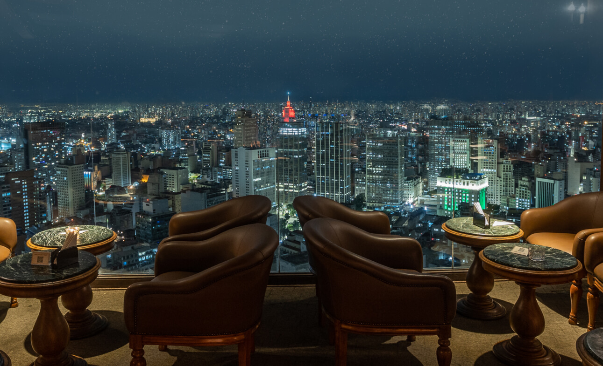

Terraço Itália
Com proposta mais intimista e focada em experiências únicas, o Terraço é hoje o melhor local para celebrar.
O Terraço Italia é um ícone da alta gastronomia com vistas panorâmicas incríveis da cidade. Localizado no topo de um dos edifícios mais altos,
o restaurante oferece um menu sofisticado de culinária italiana, com pratos elaborados que honram a tradição e os sabores autênticos da Itália.
O ambiente elegante, combinado com o cenário de tirar o fôlego, faz do Terraço Italia o destino ideal para celebrações e momentos inesquecíveis.
